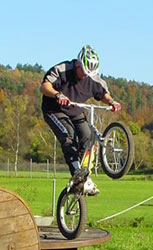

- questions -
Our promise is to always treat each investigation as a personal one. All of the credit should actually go to everyone here at RSG International Investigations and Security who have made our company grow in a positive direction. Please feel free to browse through our website and call us or email us with any questions or comments. ..
|  |
Our promise is to always treat each investigation as a personal one. All of the credit should actually go to everyone here at RSG International Investigations and Security who have made our company grow in a positive direction. Please feel free to browse through our website and call us or email us with any questions or comments. .. |
|
Our software is highly automated and so products may be of interest to remote sensing scientists wishing to avoid processing long sequences of data by hand. Upon completion the form should be sent to Dr Peter Miller or Steve Groom. Information Please read the RSDAS AVHRR Brochure and Frequently-Asked Questions (FAQ) for further information on services available, or the Introduction to Remote Sensing designed for Science, Engineering and Technology Week. Access to data Any scientist or research group whose work is either supported by NERC, or is eligible for a NERC research grant or training award, may apply to RSDAS for data processing services. To ensure cost effective use of the limited resources available, all applications for data processing are peer-reviewed and graded using procedures and criteria that are consistent with those used elsewhere in NERC. |
|
Our software is highly automated and so products may be of interest to remote sensing scientists wishing to avoid processing long sequences of data by hand. Upon completion the form should be sent to Dr Peter Miller or Steve Groom. Information Please read the RSDAS AVHRR Brochure and Frequently-Asked Questions (FAQ) for further information on services available, or the Introduction to Remote Sensing designed for Science, Engineering and Technology Week. Access to data Any scientist or research group whose work is either supported by NERC, or is eligible for a NERC research grant or training award, may apply to RSDAS for data processing services. To ensure cost effective use of the limited resources available, all applications for data processing are peer-reviewed and graded using procedures and criteria that are consistent with those used elsewhere in NERC. |
also look at: http://www.uni-mainz.de/~leitk000/rugby/rgbyrule.html